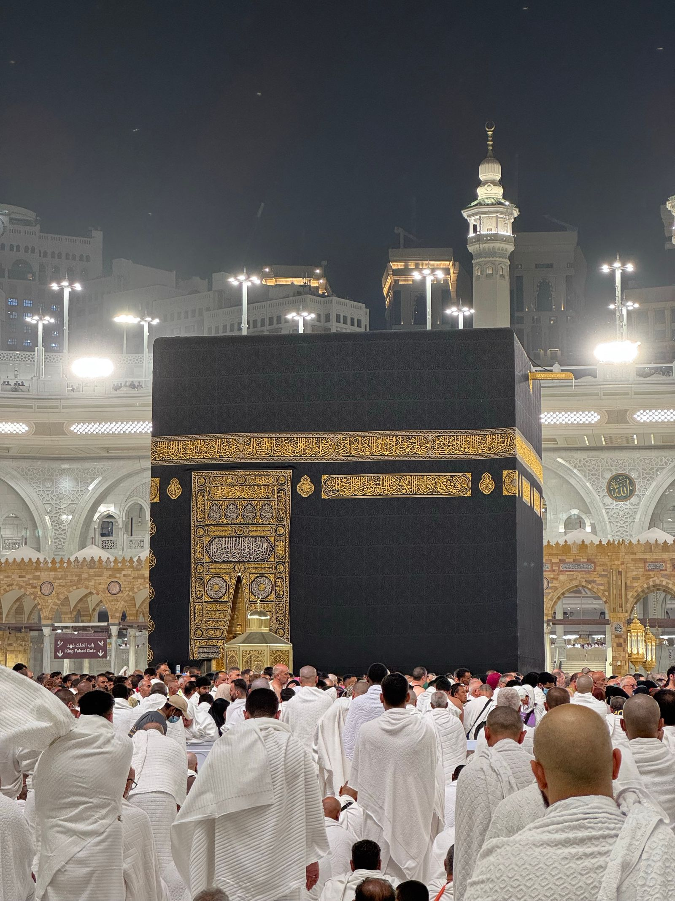

Umrah · When to Go
Best Time to Perform Umrah — Weather, Crowds & Cost Guide

Umrah can be performed at almost any time of year, but the month you choose decides three things: how hot Makkah feels, how crowded the Haram is, and how much the trip costs. Here is the year in short — the coolest months, the busiest weeks, the cheapest windows, and the stretch that balances all three.
Coolest — winter, December to February: These are Makkah's mildest months, with daytime highs around 29–32°C and nights near 18°C; January is the coolest month of the year. Tawaf and the walk to your hotel stay comfortable even for elderly pilgrims and children. One caution: Rajab (December 2025 – January 2026) is a winter peak — the weather is at its best, but so are the crowds and the prices.
Most crowded and most expensive — Ramadan: Ramadan 1447 is expected around 17/18 February to 18/19 March 2026. It is the busiest and priciest time of the year — in Ramadan 2025 the Grand Mosque received a record 25 million worshippers in the first 10 days alone. If price matters, avoid the last 10 nights of Ramadan and the school-holiday weeks, when family trips push fares and hotel rates to their peak. Our Umrah in Ramadan guide covers the month in full.
Cheapest — late September to mid-November, and the post-Hajj months: The lowest prices and the lowest crowds come in late September to mid-November and in the post-Hajj months of Muharram and Safar (June–August 2026). The trade-off is heat: those summer months regularly reach 40–44°C, so plan Tawaf for the early morning or the night, and rest through the middle of the day.
The best balance — mid-October to mid-November 2026: If you want one window that balances weather, crowds and cost, this is it: temperatures are falling, the Haram is calmer than in the winter peak, and prices have not yet climbed for December. Pair it with our Umrah Cost 2026 breakdown to budget the trip.
Who should go when:
- Families with elderly parents or young children: choose winter — the mild weather is worth the higher price. See our Umrah for Elderly & Disabled guide for facilities and pacing.
- Budget travellers: choose the summer and post-Hajj months — the lowest crowds and prices of the year, if you can handle 40–44°C heat.
- Seeking the Ramadan reward: go, but book months ahead, pace yourself around fasting, and expect the fullest Haram of the year.
Quick questions:
- What is the coolest month for Umrah? January — winter days run about 29–32°C with nights near 18°C, the gentlest weather of the year in Makkah.
- When is Umrah cheapest? Late September to mid-November, and the post-Hajj months of Muharram and Safar (June–August 2026) — the lowest crowds and prices, but serious summer heat.
- When is it most crowded? Ramadan — above all the last 10 nights — and the school-holiday weeks. Ramadan 1447 falls around 17/18 February to 18/19 March 2026.
Sources: Wego Blog — Umrah month-by-month guide · Saudi National Center for Meteorology — Makkah climate averages · Sunaan — Best Time for Umrah 2026 guide · Sahih al-Bukhari 1782 — Sunnah.com ↗